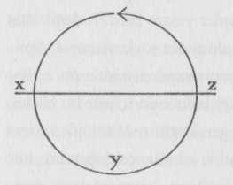

Kahramanın mitolojik macerasının standart yolu geçiş ayinlerinde sunulan formülün büyütülmüş halidir: ayrılma-erginlenme-dönüş: buna monomitin çekirdek birimi denebilir.{37}

Bir kahraman olağan dünyadan çıkıp doğaüstü tuhaflıklar bölgesine doğru ilerler: burada masalsı güçlerle karşılaşılır ve kesin bir zafer kazanılır: kahraman bu gizemli maceradan benzerleri üzerinde üstünlük sağlayan bir güçle geri döner.
Prometheus göklere çıktı, tanrılardan ateşi çaldı ve aşağı indi. İason, gemisiyle Çarpışan Kayalar’ın arasından bir mucizeler denizine yelken açtı, Altın Postu koruyan canavarı yendi ve hakkı olan tacı bir gaspçıdan geri almak için gereken güç ve postla geri döndü. Aineias yeraltına indi, ürkünç ölüler nehrini geçti, üç başlı bekçi köpeği Kerberos’a et verdi ve sonunda ölü babasının hayaletiyle konuştu. Her şey onun için anlaşılır oldu: ruhların kaderi, kurmak üzere olduğu Roma’nın kaderi, “ve bilgelikle nasıl her beladan kaçınabileceği ya da ona katlanabileceği.”{38} Fildişi kapıdan geçerek dünyadaki işine geri döndü.
Kahramanın görevinin güçlüklerinin ve engin bir şekilde düşünülüp ciddiyetle yerine getirildiği zamanki yüce belirtisinin harika bir örneği, Buddha’nın geleneksel Büyük Mücadele efsanesinde bulunmaktadır. Genç prens Gautama Sakyamuni atı Kanthaka’ya binerek babasının sarayından gizlice ayrılır, muhafızlı kapıdan mucizevi biçimde geçer, gecenin içinde dört çarpı altmış bin ilahın meşalesi eşliğinde ilerler, bin yüz yirmi sekiz arşınlık görkemli bir nehirde hafifçe duraksar ve sonra tek bir kılıç darbesiyle kendi soylu buklelerini koparır, kalan iki parmak genişliğindeki saç sağa kıvrılır ve başında dümdüz durur. Bir rahibin kılığına girerek dünyada bir dilenci gibi gezinir ve bu amaçsızca dolanma yılları sırasında meditasyonun sekiz aşamasına ulaşarak onları aşar. Bir çilehaneye çekilir, gücünü altı yıl daha büyük mücadeleye harcar, sadeliği en yüksek derecesine götürür ve neredeyse ölür gibi olur, ama iyileşir. Daha sonra çileci gezginliğin çok katı olmayan yaşamına döner.
Bir gün dünyanın doğu kısmını kaplayan bir ağacın altına oturur ve ağaç onun varlığıyla aydınlanır. Sujata adlı bir genç kız gelip ona altın bir kaptan pirinç sütü sunar ve o boş kabı bir nehre attığı zaman kap suyun tersine gider. Bu zafer anının geldiğinin işaretidir. Ayağa kalkar ve tanrıların bezediği ve bin yüz yirmi sekiz arşın genişliğinde olan bir yolda ilerler. Yılanlar ve kuşlar ve ormanların ve tarlaların ilahları ona çiçekler ve göksel kokularla eşlik eder, tanrısal korolar şarkı söyler, on bin dünya kokular, çiçekler, sesler ve selamlama bağırışlarıyla kaplanır; çünkü o büyük Aydınlanma Ağacı’na, altında evreni kurtaracağı Bo Ağacı’na giden yoldadır. Kesin bir kararlılıkla Bo Ağacı’nın dibine, Kıpırtısız Nokta’ya yerleşir ve yanına hemen Kama- Mara, aşk ve ölüm tanrısı yanaşır.
Korkunç tanrı bir filin üstünde ve bin elinde silahlar taşıyarak gelir. Ününde altmış fersah, sağında altmış fersah, solunda altmış fersah ve ardında dünyanın ucuna dek uzanan askerle çevrilidir. Evrenin koruyucu tanrıları kaçışır, fakat Geleceğin Buddhası ağacın altında kıpırdamadan durur. O zaman tanrı, ona saldırıp onun yoğunlaşmasını kırmaya çalışır.
Düşman hortumlar, kayalar, şimşek ve alev, keskin köşeli duman silahları, yanan kömürler, sıcak küller, kaynar çamurlar, fokurdayan kumlar ve dört kat karanlıkla, Kurtarıcı’ya saldırdı, fakat bütün silahlar, Gautama’nın on kusursuzluğunun gücüyle göksel çiçeklere ve merhemlere dönüştü. O zaman Mara çekici hizmetçilerle birlikte kızları Arzu, Özlem ve Şehvet’i çağırdı, fakat Yüce Varlık’ın zihni bulanmadı. Tanrı, sonunda Kıpırtısız Nokta’da kendisinin oturması gerektiğini söyledi, ustura kadar keskin diskini öfkeyle fırlattı ve ordusuna dağların sarp kayalarıyla saldırmalarını emretti. Fakat Geleceğin Buddhası yalnızca elini parmak uçlarıyla yere dokunmak için kıpırdattı ve böylece Toprak tanrıçasından orada oturmanın onun hakkı olduğuna tanıklık etmesini diledi. Tanrıça yüz, bin, yüz bin kükreyişle tanıklık etti, böylece Düşman’ın fili Geleceğin Buddhası’na boyun eğerek yere çöktü. Ordu bir anda dağıldı ve bütün dünyaların tanrıları çiçek taçları dağıttı.
Gün batmadan ilk zaferini kazanmış olan fatih, gecenin ilk nöbetinde daha önceki varoluşlarının bilgisini edindi, ikinci nöbetinde her şeyi bilen tasavvurun tanrısal gözünü ve son nöbetinde nedenler zincirinin kavrayışını. Gün ağarırken mükemmel aydınlanmayı yaşamıştı.{39}
Daha sonra yedi gün boyunca, -artık Buddha, Aydınlanmış olan- Gautama saadet içinde hareketsiz oturdu; yedi gün boyunca aydınlanmaya ulaştığı noktadan uzak durdu ve onu seyretti; yedi gün boyunca oturduğu yer ile durduğu yer arasında gidip geldi; yedi gün boyunca tanrıların döşediği bir yerde barındı ve bütün neden ve sonuçlar öğretisini inceledi; yedi gün boyunca Sujata adlı kızın ona altın bir kapta pirinç sütü getirdiği yerdeki ağacın altında oturdu ve orada, Nirvana’nın hoşluğu öğretisi üzerine meditasyon yaptı; başka bir ağaca geçti ve yedi gün süren büyük bir fırtına koptu, fakat Yılanların Kralı köklerin arasından çıktı ve boynunu uzatarak Buddha’yı korudu; sonunda, Buddha dördüncü bir ağacın altında hâlâ özgür kalmanın tatlılığıyla eğlenerek oturdu. Sonra düşüncesinin aktarılıp aktaramayacağından şüphelendi ve bilgeliği kendisine saklamayı düşündü; fakat tanrı Brahma yücelerden, onun tanrıların ve insanların öğretmeni olmasını dilemek için indi. Buddha böylece yolu göstermeye ikna edilmişti.{40} Ve o insanlar arasında, paha biçilmez hediyesini, yani Yol’un bilgisini sunarak gezmek üzere şehirlere gitti.{41}
Eski Ahit, İsrail’in Mısır toprağından ayrılışının üçüncü ayında halkıyla birlikte Sina çölüne gelen Musa efsanesinde de benzer bir olayı anmaktadır: İsrail orada çadırlarını dağa karşı kurar. Ve Musa Tanrı’nın yanına çıktı, ve Rab ona dağdan seslendi. Rab ona Emirler’i verdi ve Musa’ya bunlarla birlikte, Rab’bin halkına, İsrail’e dönmesini emretti.{42}
Yahudi halk efsanesi vahiy günü boyunca Sina Dağı’ndan değişik gürültülerin geldiğini söyler. “Durmaksızın çalan boruların eşlik ettiği şimşekler halkı aşırı korkuya ve titremeye sevketti. Tanrı gökleri büktü, yeri oynattı ve dünyanın sınırlarını sarstı ki, derinler titredi ve gökler korkuya kapıldı. Onun görkemi ateşin, depremin, fırtına ve dolunun dört eşiğinden geçti. Dünya kralları saraylarında titredi. Yerin kendisi ölülerin dirilme vaktinin geldiğini ve yuttuğu kurbanların kanını ve üzerlerini örttüğü katledilmişlerin bedenlerini ödemesi gerekeceğini düşündü. Yer, On Emir’in ilk kelimelerini duyuncaya dek sakinleşmedi.
“Gökler yarıldı ve Sina Dağı yerden kopup yükseldi, öyle ki çevresini kalın bir bulut kaplarken başı gökleri deldi ve İlahi Taht’ın ayaklarına dokundu. Levililer için, geri kalanlar Altın Buzağı’ya taparken Tanrı’ya sadık kalmış olan bu tek kabile için taçlarla birlikte yirmi iki bin melek belirdi Tanrı’nın bir yanında. Öte yanında her biri Israillilerin her biri için ateşten birer taç taşıyan altı yüz bin, üç bin beş yüz ve elli melek vardı. Üçüncü yanda bu meleklerin iki katı vardı; dördüncü yanda ise sayılamayacak kadar çoktular. Çünkü Tanrı tek bir yönden değil, her yönden aynı anda belirdi, ama bu Onun görkeminin dünyayı olduğu kadar gökleri de doldurmasını engellemedi. Sayılamayacak kadar çok olmalarına rağmen Sina Dağı’nda bir kalabalık yoktu, kargaşa yoktu, herkese yer vardı.”{43}
Yakında göreceğimiz gibi, ister Doğunun engin, neredeyse okyanus büyüklüğündeki imgelerinde, ister eski Yunanların güçlü anlatılarında ya da ister Incil’in muhteşem efsanelerinde olsun, kahramanın macerası normal olarak yukarıda anlatılan çekirdek birimin kalıbını izlemektedir: dünyadan ayrılma, birtakım güç kaynaklarına dalma ve yaşam yenileyen bir dönüş. Batı’nın Musa’nın On Emir’iyle kutsanması gibi, Bütün Doğu da Gautama Buddha’nın getirdiği lütufla -onun o enfes İyi Yasa öğretisiyle- kutsanmıştır. Eski Yunanlar ateşi, bütün insan kültürünün ilk desteğini, Prometheus’larının dünyayı aşan kahramanlığına ve Romalılarda, dünyalarını destekleyen şehirlerinin kuruluşunu, fethedilen Troia’dan ayrılıp ölülerin o tekinsiz yeraltı dünyasını ziyaretinin ardından Aineias’a bağladılar. Her yerde, hangi alanda olursa olsun (dinsel, politik ya da kişisel), gerçekten yaratıcı olan eylemler dünyadaki bir ölümün sonucu olarak sunulmuştur; ve kahramanın var olmadığı, yeniden doğmuş, yüceltilmiş ve yaratıcı güçle donatılmış biri olarak geri gelmesini sağlayan dönem konusunda da insanlık hemfikirdir. Bu yüzden, hep sergilenmiş olanı yeniden görmek için, bir dizi kahraman figürünü evrensel maceranın klasik aşamalarından geçerken izlemek yeterli olur. Bu yalnızca bizim bu imgelerin çağdaş yaşam için taşıdığı anlamı değil, insan ruhunun, yetenekleri, güçleri, değişimleri ve bilgeliği açısından birliğini anlamamızı sağlayacaktır.
İzleyen sayfalar bir bütün macera şeklinde, Sıradan Adamın kaderinin dünyadaki simgesel taşıyıcılarından bazılarının öyküsünü sunacaktır. İlk büyük aşama, yani ayrılma ya da yola çıkma, Kısım I, Bölüm I’de beş başlıkla gösterilecektir: (1) “Maceraya Çağrı,” ya da kahramanın seçilmesinin işaretleri; (2) “Çağrının Reddedilişi,” ya da tanrıdan kaçma budalalığı, (3) “Doğaüstü Yardım,” kendisi için uygun macerasını üstlenmiş olana gelen beklenmedik yardım; (4) “İlk Eşiğin Aşılması” ve (5) “Balinanın Karnı,” ya da gecenin diyarına geçiş. Erginlenmenin sınavları ve zaferleri aşaması Bölüm II'’de altı başlıkla belirecektir: (1) “Sınavlar Yolu,” ya da tanrıların tehlikeli yönü; (2) “Tanrıçayla Karşılaşma” (Magna Mater), ya da çocukluk mutluluğunun yeniden elde edilmesi; (3) “Baştan Çıkarıcı olarak Kadın,” Oidipous’un anlaması ve acısı; (4) “Babanın Gönlünü Alma”; (5) “Tanrılaştırma”; ve (6) “Nihai Ödül.”
Ruhsal enerjinin dünyada sürekli çevrimi için kaçınılmaz olan ve uzun inzivanın topluluk açısından aklanması olan dönüş ve toplumla yeniden kaynaşmayı kahramanın kendisi hepsinden de güç bir zorunluluk olarak görebilir. Çünkü eğer başardıysa, Buddha gibi tam bir aydınlanmanın derin huzuruna ulaştıysa, bu deneyimin mutluluğunun dünyanın acıları karşısında umuda ya da ilgi kaybına yol açma tehlikesi vardır; ya da ekonomik sorunlara gömülmüş insanlara aydınlanma yolunu bildirmek çözümsüz bir sorun gibi görünebilir. Ve diğer yandan, eğer kahraman bütün başlangıç sınavlarına girmeden, Prometheus gibi hedefine (şiddet, el çabukluğu ya da şans yoluyla) kolayca ulaşıp dünya için istediği lütfü elde ettiyse, o zaman dengesini bozduğu güçler onu içten ve dıştan parçalayacak kadar sertçe geri tepebilir - Prometheus gibi kendi zarar görmüş bilinçdışının kayasına zincirlenebilir. Ya da, üçüncü bir biçimde, eğer kahraman güvenli ve istekli dönüşünü yaparsa, yardıma geldikleri tarafından öylesine boş bir yanlış anlaşılmayla ve ilgisizlikle karşılanabilir ki, yaptıkları hiçbir anlam taşımayabilir. İlerideki bölümlerin üçüncüsü bu olasılıkların tartışmasını altı altbaşlık altında sonuçlandıracaktır: (1) “Dönüşün Reddedilişi,” ya da inkar edilen dünya; (2) “Büyülü Kaçış,” ya da Prometheus’un kaçışı; (3) “Dışarıdan Gelen Kurtuluş”; (4) “Dönüş Eşiğinin Aşılması,” ya da sıradan dünyaya dönüş; (5) “İki Dünyanın Ustası”; (6) “Yaşama Özgürlüğü,” nihai ödülün doğası ve işlevi.{44}
Monomitin karmaşık kahramanı sıradışı yetenekleri olan bir kişidir. Sıkça toplumu tarafından ödüllendirilir, sık sık tanınmaz ya da reddedilir. O ve/veya kendini içinde bulduğu dünya simgesel bir eksiklik duymaktadır. Peri masallarında bu belli bir altın yüzüğün yokluğu kadar hafif olabilirken, kıyamet tasavvurunda bütün dünya fiziksel ve ruhsal yaşamı yıkıma uğramış ya da uğrama noktasına gelmiş olarak gösterilebilir.
Tipik olarak peri masalının kahramanı kendi bölgesine ait, mikrokozmik, mitin kahramanı ise dünya tarihine ait, makrokozmik bir zafer elde eder, ilki -sıradışı güçlerin ustası haline gelen en genç ya da küçümsenmiş çocuk- kişisel zorbalarına karşı üstünlük elde ederken, ikincisi macerasından geriye bir bütün olarak toplumunun yenilenme araçlarını getirir. İmparator Huang Ti, Musa ya da Aztekli Tezkatlipoka gibi kabilesel ya da yerel kahramanlar tek bir halka lütuflarını sunarlar; evrensel kahramanlar -Muhammed, İsa, Gautama Buddhabütün dünya için bir mesaj getirir.
Kahraman gülünç ya da budala, eski Yunan ya da barbar, kibar ya da Yahudi olsun, yolculuğu temelde çok az değişir. Halk masalları kahramanca eylemi fiziksel olarak gösterir, yüksek dinler yapılan işi ahlaksal olarak sunar; yine de, maceranın morfolojisinde, katılan karakterlerde, elde edilen zaferlerde şaşırtıcı ölçüde az çeşitlilik bulunacaktır. Eğer arketipsel kalıbın şu ya da bu temel öğesi belli bir peri masalı, efsane, ayin ya da mitten çıkarılmışsa bu bir şekilde sezdirilmelidir - ve çıkarma işlemi, hemen şimdi göreceğimiz gibi, örneğin tarihi ve patolojisi konusunda ciltler dolusu konuşabilir.
Kısım II, “Kozmogonik Çevrim,” başarılı kahramana vahiy olarak lütfedilmiş dünyanın yaratılışı ve yok edilişine dair büyük rüyeti ele alıyor. Bölüm I, Yayılışlar, evren biçimlerinin hiçlikten çıkışı üzerinde duruyor. Bölüm II, Bakireden Doğum, dişi gücün, önce Evrenin Annesi olarak kozmik bir ölçekteki, sonra Kahramanın Annesi olarak yine insan düzlemindeki yaratıcı ve kurtarıcı rollerinin gözden geçirilişidir. Bölüm III, Kahramanın Dönüşümleri, tipik aşamaları boyunca, insan ırkının efsanevi tarihinin, ırkın değişen gereksinimlerine göre sahnede değişik biçimlerde görünen kahramanın izini sürmektedir. Ve Bölüm IV, Çözülüşler, önce kahramanın, sonra da ortaya çıkan dünyanın öngörülmüş sonunu anlatıyor.
Kozmogonik çevrim bütün kıtaların kutsal yazılarında şaşırtıcı bir tutarlılıkla sunulmuştur,{45} ve kahramanın macerasına yeni ve ilginç bir yön vermektedir; çünkü böylece tehlikeli yolculuğun bir bağlanma değil yeniden bağlanma, keşif değil yeniden keşif çabası olduğu anlaşılmaktadır. Aranan ve tehlikeli biçimde elde edilen tanrısal güçlerin daha en başından beri kahramanın kalbinde olduğu ortaya çıkar. O, kim olduğunu öğrenen ve böylece olması gereken gücünün uygulamasına geçen “kralın oğlu”dur - bu unvanın tam olarak ne demek olduğunu öğrenen “Tanrı’nın oğlu”dur. Bu bakış açısıyla kahraman, hepimizin içinde saklı duran, yalnızca bilinmeyi ve yaşama katılmayı bekleyen tanrısal yaratıcı ve kurtarıcı imgenin simgesidir.
“Bir, birçok olan Bir için bölünmemiş kalır, fakat her parçası İsa'dır,” diye okuruz genç Aziz Simeon'un (MS 949-1022) yazılarında. “Onu evimde gördüm,” diye sürdürür aziz. “Şu günlük şeyler arasında O beklenmedik biçimde belirdi ve benimle söze dökülemez biçimde birleşmiş ve kaynaşmış oldu, ve ateşin demirin, ışığın camın üzerinden geçmesi gibi arada bir şey olmaksızın üzerimden geçti. Ve O beni ateş gibi ve ışık gibi yaptı. Ve ben daha önce gördüğüm ve uzağında durduğum şey oldum. Bu mucizeyi size nasıl aktaracağımı bilemiyorum. ... Doğal olarak bir insanım ve Tanrı’nın kucaklamasıyla Tanrı’yım.”{46}
Benzer bir rüyet apokrifal Havva Incil’i içinde anlatılmaktadır. “Yüce bir dağın üstünde durdum ve devasa bir adam ve bir de cüce gördüm; ve bir gökgürültüsü sesi duyar gibi oldum ve duymak için yaklaştım; ve bana konuştu ve dedi ki: ben senim ve sen bensin, ve nerede olursan ol oradayım. Her şeyde varım, ve ne zaman istersen, sen toplarsın Beni; ve Beni toplayarak Kendini toplarsın.”{47}
İkisi -kahraman ve yüce tanrı, arayan ve bulduğu-, kendini yansıtan, dıştaki dünyanın gizeminin tıpkısı olan tek bir gizemin içi ve dışı olarak anlaşılır. Yüksek kahramanın büyük görevi, çokluktaki bu birliğin bilgisine ulaşmak ve onu bilinir kılmaktır.